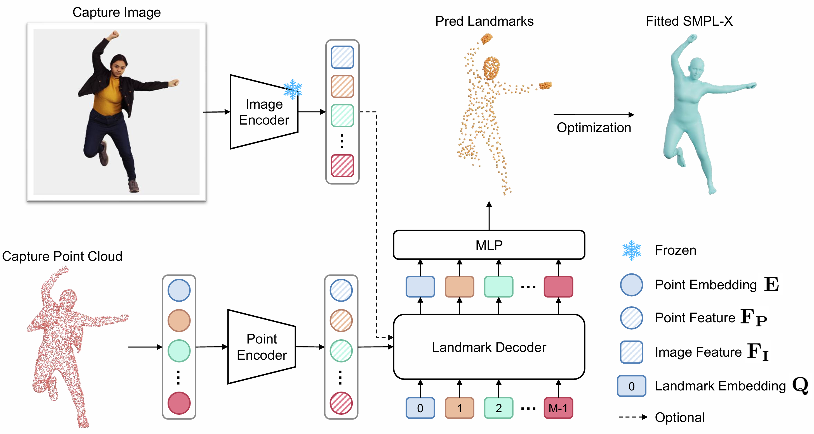
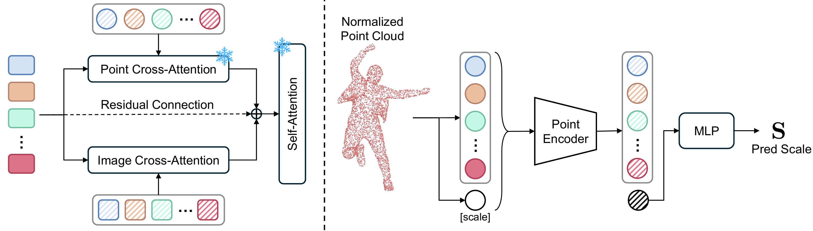
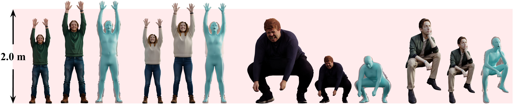
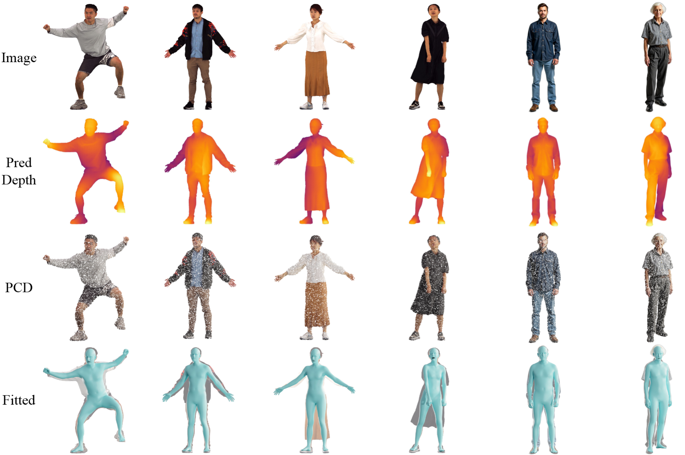

Project Page
ECCV 2026
A unified 3D Human body fitting framework that robustly handles full scans, partial depth, (RGB-conditioned) point clouds, and scale-distorted AI-generated assets.
† Corresponding Author
Overview
Fitting an underlying body model to 3D clothed human assets has been extensively studied, yet most approaches focus on either single-modal inputs such as point clouds or multi-view images alone, often requiring known metric scale, a constraint that is frequently unavailable, particularly for AIGC-generated assets where scale distortion is prevalent. We propose OmniFit, where "Omni" signifies our method's ability to seamlessly handle diverse multi-modal inputs such as full scans, partial depth, and image captures, while remaining scale-agnostic across both real and synthetic assets. Our key innovation is a simple yet effective conditional transformer decoder that directly transforms surface points into dense body landmarks, which are subsequently used for SMPL-X parameter fitting. Additionally, an optional plug-and-play image adapter enriches geometric details with visual cues to address potential incompleteness. We further introduce a dedicated scale predictor to resize subjects into canonical proportions. Remarkably, OmniFit substantially outperforms state-of-the-art methods by 57.1%-70.9% across daily and loose clothing scenarios, making it the first body fitting method to surpass multi-view optimization baselines and the first to achieve millimeter-level accuracy on CAPE and 4D-DRESS benchmarks.

The structure of the landmark predictor. Given an input point cloud, the landmark predictor estimates dense 3D landmarks. The point cloud is first tokenized into point embeddings and then fed into the point encoder to produce point features. The landmark decoder is a Perceiver-style transformer that takes learnable landmark embeddings as queries, cross-attends to the point cloud features, and regresses the final 3D landmark coordinates via an MLP. Optionally, image features extracted by a pretrained image encoder can be injected into the landmark decoder, further enhancing the prediction results with visual cues.

Image adapter (left) and scale predictor (right). (Left) The plug-and-play image adapter adds a lightweight cross-attention branch in parallel with the existing point cloud cross-attention in each landmark decoder layer. Image features are fused alongside point cloud features without modifying the base architecture, allowing the adapter to be enabled or disabled at will. (Right) The scale predictor shares the same architecture as the point cloud encoder, but adds a scale token to the patch embedding sequence. The token's output is passed through an MLP to regress a scale factor S, which rescales the input point cloud to canonical human size.

Rescaling and body fitting results on generated 3D humans. For each example, we show from left to right the original 3D human, the rescaled 3D human, and the corresponding SMPL-X fitting result. OmniFit also performs well on scale-distorted human assets.

Fitting results on depth capture. We estimate the depth map from a full-body image using Sapiens, extract a point cloud, rescale the data, and fit the 3D body with OmniFit.
(3D Human, Fitting Result)
(3D Human, Fitting Result, Ground Truth)